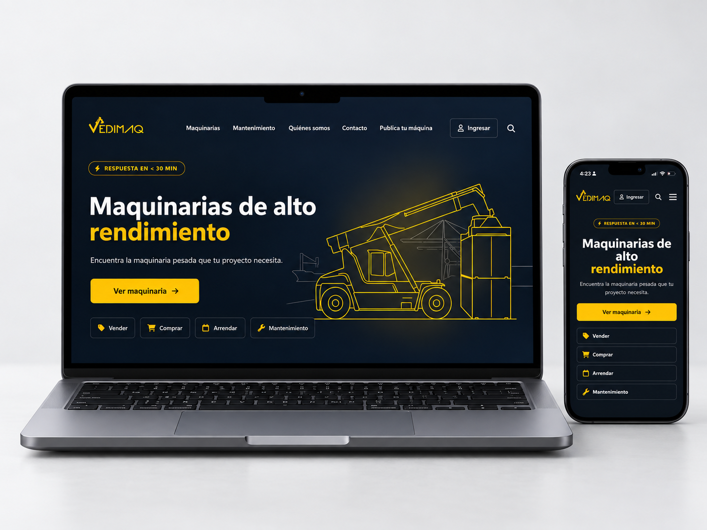
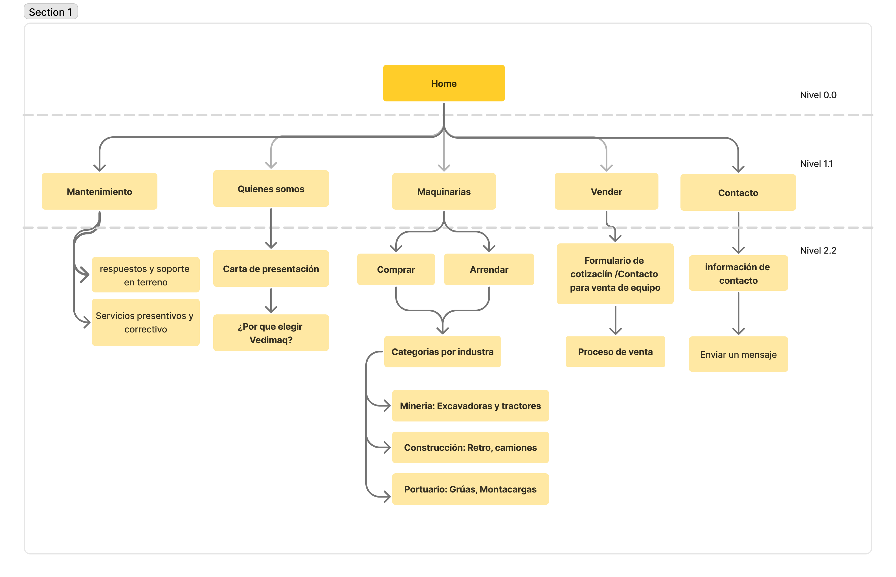
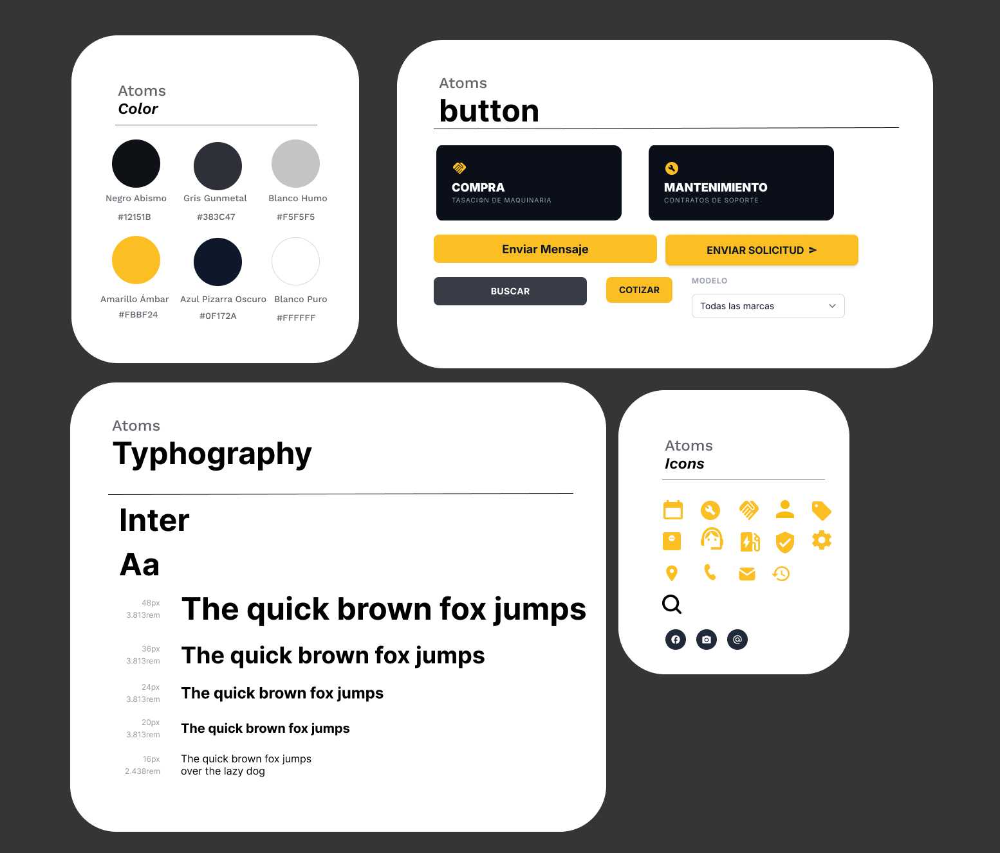
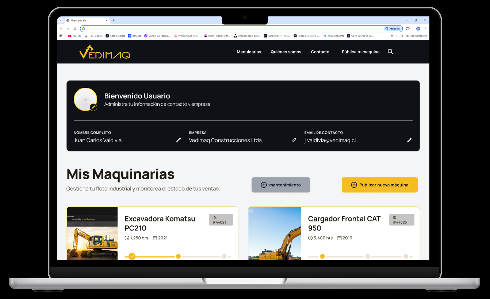
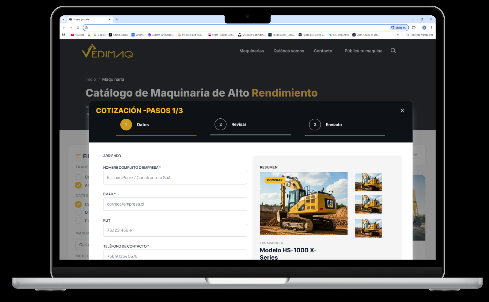
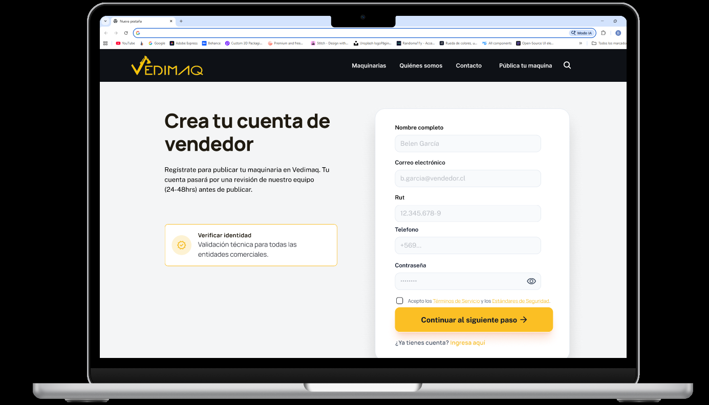

Digitalizando la confianza en el mercado de maquinaria pesada
Vedimaq comercializa, arrienda y mantiene maquinaria de alto rendimiento para minería, construcción y puertos en la Región de Valparaíso. El reto: transformar una venta tradicional y burocrática en un canal digital ágil, creíble y autónomo.

Cotizar millones de pesos sin ver un precio
Las transacciones de maquinaria superan miles de UF. Los jefes de obra evitan cotizar en línea por falta de transparencia, lentitud y desconfianza. ¿Cómo diseñar un flujo de cotización transparente y robusto para encargados de compra con baja alfabetización digital, que necesitan resolver urgencias en faena sin perder tiempo?
Benchmark del rubro
Para entender el estándar del mercado hice un benchmark competitivo con tres marcas chilenas del mismo rubro, venta y arriendo de maquinaria pesada, revisando catálogo, transparencia de precios y canal de contacto. Las tres dejaban el mismo vacío: nadie acompaña la cotización.
Marketplace frío, sin trato humano ni cotización guiada.
Enfocado en megaminería; catálogo cerrado, sin precios libres.
Marca fuerte, pero web desactualizada y fichas incompletas.
Camilo, 56 años · Jefe de obra en Quillota
«Trabajador de toda la vida, pero el tiempo se me va en internet. Necesito que me resuelvan, no que me confundan».
Sin tiempo que perder
Si una máquina falla, cada hora cuesta millones. No tiene tiempo para registros largos ni menús confusos.
Uso bajo sol directo
Revisa el celular en la obra con reflejo solar y dedos cansados o con guantes. Requiere botones grandes y alto contraste.
Busca trato humano
Desconfía de formularios ciegos. Prefiere cotizaciones formales en PDF y un WhatsApp directo con el asesor.
Estructura sin fricción, ergonomía para alta luminosidad
Para evitar la sobrecarga cognitiva con especificaciones densas, toneladas, HP, horas de horómetro, estructuré una jerarquía donde cualquier máquina o servicio se alcanza en máximo dos clics: cinco caminos claros desde un único home.

Paleta inspirada en la maquinaria de faena: negro acero #12151B con acento amarillo ámbar #FBBF24, tomado de la señalética de seguridad y reservado solo para acciones. Tipografía Inter y áreas táctiles generosas para dedos con guantes.

Cuatro recorridos, un mismo lenguaje
Compra, arriendo, marketplace de vendedores y mantenimiento. Cada flujo comparte el mismo cotizador de tres pasos, para que aprender uno sea aprenderlos todos.




Cotización formal en 3 pasos
Disponible en GitHub Pages
El proyecto no quedó solo en Figma: se maquetó en código funcional y responsivo, con validaciones y salida a WhatsApp.
Ver sitio web en vivo ↗